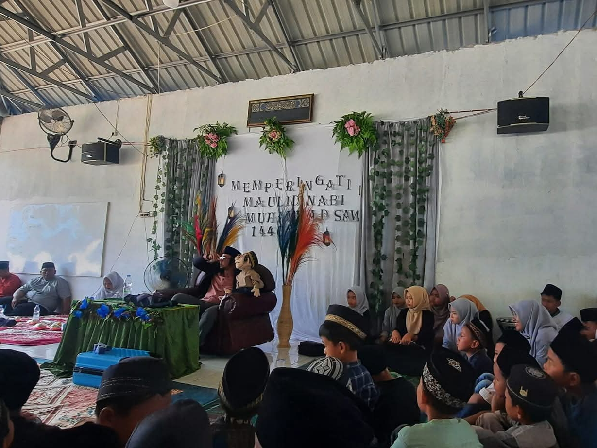
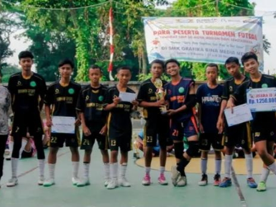
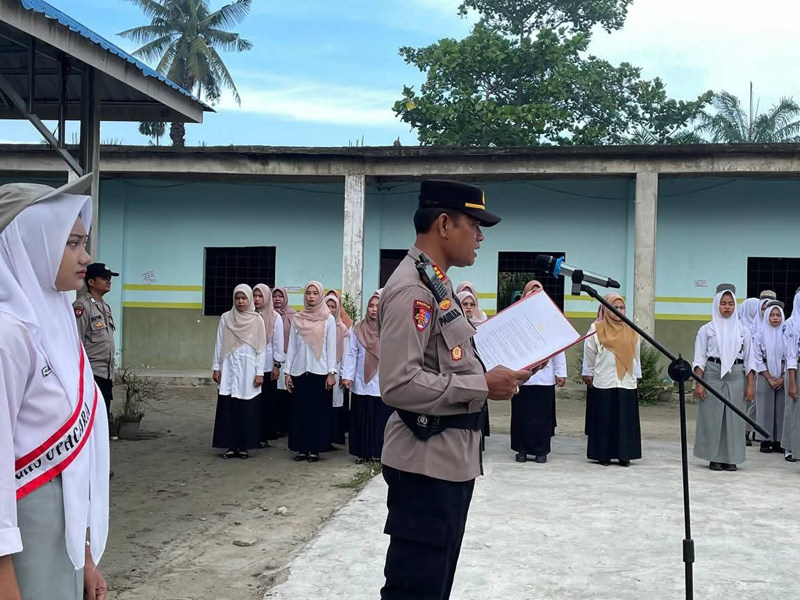
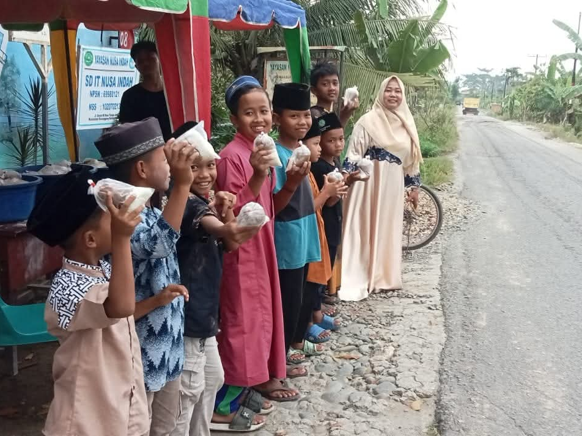
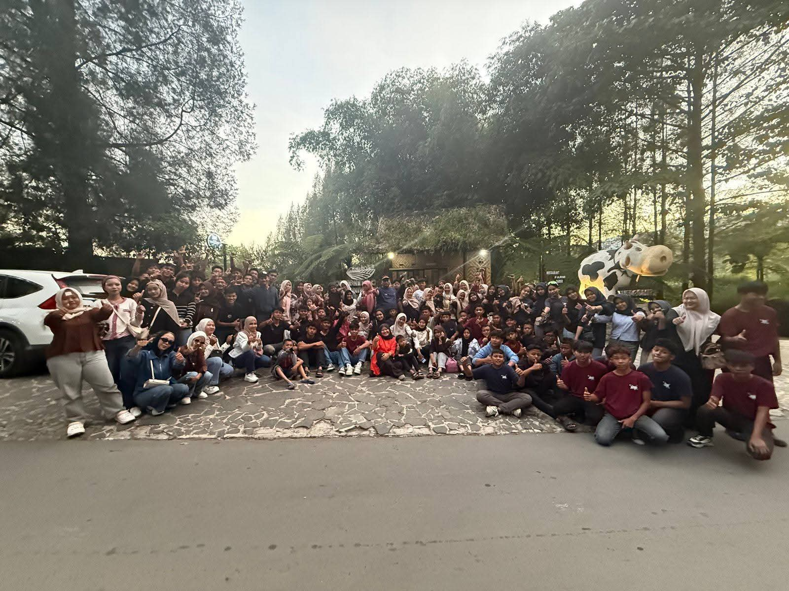

Berita/Artikel
Papan informasi digital yang ditujukan untuk,
memberitahu informasi mengenai kegiatan sekolah

📆31 Januari 2026
Peringatan Isra Mi'raj Nabi Muhammad Saw 1447H dengan penuh khidmat dan semangat kebersamaan.Kegiatan yang berlangsung di mushola sekolah yang dihadiri oleh seluruh siswa,guru,dan tenaga kependidikan.

📆2 Oktober 2024
Peringatan Maulid Nabi Muhammad Saw 1447H yang dilaksanakan di mushola sekolah yang dihadiri oleh seluruh siswa,guru,dan tenaga kependidikan.

📆17 Agustus 2025
Tim Drumband Nusa Indah berhasil meraih juara 2,acara KARNAVAL KIRAB NUSANTARA dalam rangka peringatan HUT RI ke-80.Kerja keras,disiplin menjadi dan kekompakan menjadi kunci kemenangan kami.

📆3 November 2025
Tim Futsal Nusa Indah sukses meraih juara 2 Turnamen Futsal antar sekolah.Terimakasih atas kerja sama keras tim,Coach,dan dukungan semua pihak.

📆9 Februari 2026
Suasana khidmat Upacara Bendera senin pagi.Dengan Bapak Kapolsek Secanggang hadir sebagai Pembina Upacara dan memberikan motivasi kepada siswa/siswi untuk berprestasi dan menjaga nama baik sekolah.

📆21 Februari 2026
Setiap jum'at sore selama bulan ramadhan,Keluarga Besar Nusa Indah setia berbagi takjil gratis untuk warga & pengendara yang lewat.

📆29 Mei 2026
Study Tour & Pelepasan siswa/i Smp Nusa Indah ke pemerahan susu di Berastagi rekreasi sekaligus belajar.